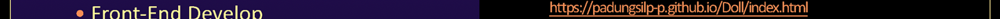

|
 |
|  |
 |
 |
 |
 |
 |
 |

Mirror Prism
A simply game website that is using the p5 library to create the website. When I was young, I played the mirror prism with many pieces of color paper inside. The shape was changed when I moved it. In this project, I create many colorful shapes. When you move the cursor, the color will change, and when you click the different one, the shape will change.
go to websiteMaria's House
A dollhouse game website that is using the p5 library to create the website. I would like to create a colorful doll and a dollhouse for myself and share everyone plays them. Maria can do many things in her house; Users can click items in the house and see what she does. There is a bedroom, dressing room, bathroom, kitchen, and garden in her house. This game will give experience to find what Maria can do and how she reacts.
go to websiteXclusive
"The new sportswear that does the ultimate power play; on the go and in the gym." Xclusive is a media campaign to launch a new product for a manufacturer of athletic gear. The Xclusive logo is created by Adobe Illustrator. It presents how is cool and multi-functions. I create a layout that can choose the logo color to put any cloth. A black pants presents the example color logo. The color presents the active, powerful, and fashional.
The picture here
Pattaya Restaurant Website
This is a website for the Pattaya Restaurant. I used Adobe XD to design this website. I grew up with Thai food and Thai food is my favorite food too. I miss Pattaya because there are many places to hang out with my friends. This website is simple and clean. It looks more modern. The logo is created by Photoshop. I like the color that shows how Pattaya is a fun and beautiful place.
The design's here
CUNYFirst Mobile Application
This is a mobile application for BMCC students. I used Adobe XD to design this application. First of all, the CUNYFirst website is not convenient for the mobile device. This mobile application is helpful for the mobile user.
The design's here
The Girl's Magazine
This is the magazine pages presenting sensitive content. I used InDesign to organize the page and use photoshop to edit the pictures. The color and pictures show the emotion of shame. This content reminded me of the feeling when my friends were talking about sensitive things that I had never seen in my country before. I was shy and kept quiet when they were talking. Somethings are better to say and learn than deny.
The picture here